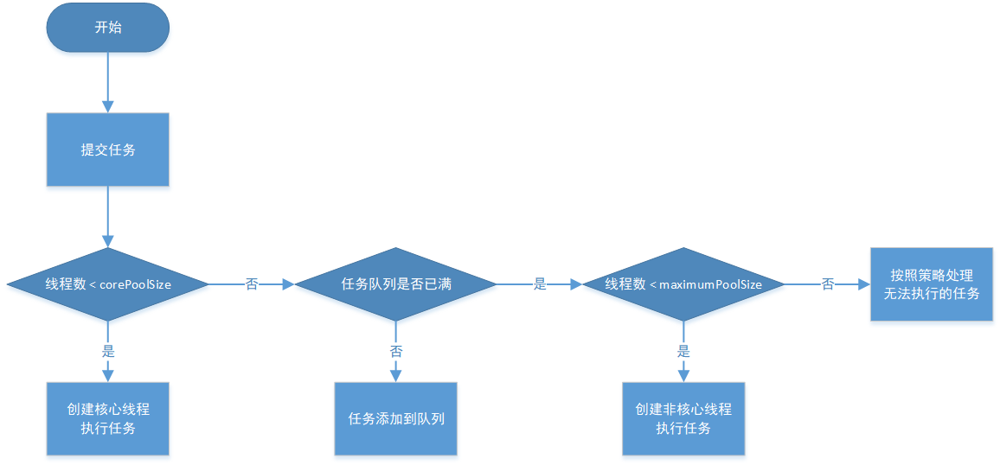
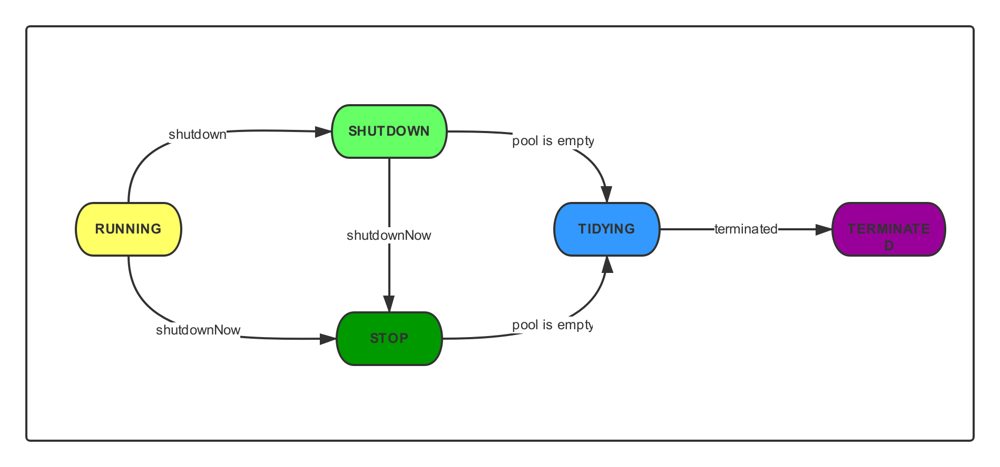

目前线程池类一般有两个，一个来自于Spring，一个来自于JDK：
说明：两个线程池类中的参数【线程池最大线程数】写法不同，在Spring线程池中为maxPoolSize，在JDK线程池中为maximumPoolSize，等价。
两个线程池类的配置差不多，Spring的做了一些配置参数的简化，最终调用JDK的API。
在执行并发任务时，我们可以把任务传递给一个线程池，来替代为每个并发执行的任务都启动一个新的线程，只要线程池里有空闲的线程，任务就会分配给一个线程执行。在线程池的内部，当线程数量达到线程池核心线程数时，后续的任务被插入一个阻塞队列(BlockingQueue)进行等待，线程池里的空闲线程会去取这个队列里的任务。
利用线程池的三个好处：
ThreadPoolExecutor类的构造函数如下：
1 public ThreadPoolExecutor(int corePoolSize,
2 int maximumPoolSize,
3 long keepAliveTime,
4 TimeUnit unit,
5 BlockingQueue<Runnable> workQueue,
6 ThreadFactory threadFactory,
7 RejectedExecutionHandler handler) {
8 if (corePoolSize < 0 ||
9 maximumPoolSize <= 0 ||
10 maximumPoolSize < corePoolSize ||
11 keepAliveTime < 0)
12 throw new IllegalArgumentException();
13 if (workQueue == null || threadFactory == null || handler == null)
14 throw new NullPointerException();
15 this.acc = System.getSecurityManager() == null ?
16 null :
17 AccessController.getContext();
18 this.corePoolSize = corePoolSize;
19 this.maximumPoolSize = maximumPoolSize;
20 this.workQueue = workQueue;
21 this.keepAliveTime = unit.toNanos(keepAliveTime);
22 this.threadFactory = threadFactory;
23 this.handler = handler;
24 }
构造函数的参数含义如下：
TimeUnit.DAYS; //天
TimeUnit.HOURS; //小时
TimeUnit.MINUTES; //分钟
TimeUnit.SECONDS; //秒
TimeUnit.MILLISECONDS; //毫秒
TimeUnit.MICROSECONDS; //微秒
TimeUnit.NANOSECONDS; //纳秒
阻塞队列有以下几种选择：
1、ArrayBlockingQueue：一个基于数组结构的有界阻塞队列，此队列按FIFO(先进先出)原则对元素进行排序
2、LinkedBlockingQueue：一个基于链表结构的阻塞队列，此队列按FIFO(先进先出)排序元素，吞吐量通常要高于 ArrayBlockingQueue。静态工厂方法Executors.newFixedThreadPool()使用了这个队列
3、SynchronousQueue：一个不存储元素的阻塞队列。每个插入操作必须等到另一个线程调用移除操作，否则插入操作一直处于阻塞状 态，吞吐量通常要高于 LinkedBlockingQueue。静态工厂方法Executors.newCachedThreadPool使用了这个队列
4、PriorityBlockingQueue：一个具有优先级的无限阻塞队列
当线程数量达到maximumPoolSize时的处理策略有以下几种：
1)ThreadPoolExecutor.AbortPolicy：丢弃任务，并抛出RejectedExecutionException异常
2)ThreadPoolExecutor.DiscardPolicy：丢弃任务，但是不抛出异常
3)ThreadPoolExecutor.DiscardOldestPolicy：丢弃队列最前面的等待时间最久的任务，然后重新尝试执行任务(重复此过程)
4)ThreadPoolExecutor.CallerRunsPolicy：由调用线程处理该任务，谁调用返回给谁
注意：Spring的线程池和JDK线程池中的拒绝策略默认值都是ThreadPoolExecutor.AbortPolicy
执行流程图：

1、当线程池中线程数小于corePoolSize时，对于新提交的任务，线程池将创建一个新线程来执行任务，即使此时线程池中存在空闲线程
2、当线程池中线程数达到corePoolSize时，新提交的任务将会被线程池放入workQueue队列中，等待线程池中任务调度执行
3、当workQueue已满，且corePoolSize < maximumPoolSize时，对于新提交的任务，线程池将创建新线程来执行任务
4、当提交的任务数超过maximumPoolSize时，新提交任务由RejectedExecutionHandler处理
5、当线程池中线程数超过corePoolSize时，空闲线程的空闲时间达到keepAliveTime时，空闲线程会被关闭
6、当设置allowCoreThreadTimeOut(true)时，线程池中的核心线程空闲时间达到keepAliveTime时也将被关闭
线程池的工作顺序：corePoolSize -> 任务队列 -> maximumPoolsize -> 拒绝策略
通过调用Executors类中的静态工厂方法可创建不同的线程池，这些线程池的内部实现原理都是相同的，仅仅是使用了不同的工作队列或线程池大小，如下：
1、newFixedThreadPool：创建一个固定大小的线程池，每次提交一个任务就创建一个线程，直到线程达到线程池的最大大小，线程池的大小一旦达到最大值就会保持不变。如果某个线程因为执行异常而结束，线程池会补充一个新的线程。
构造函数如下：
1 //第一个构造函数，参数只有线程数量，核心线程数与最大线程数一致
2 public static ExecutorService newFixedThreadPool(int nThreads) {
3 return new ThreadPoolExecutor(nThreads, nThreads,
4 0L, TimeUnit.MILLISECONDS,
5 new LinkedBlockingQueue<Runnable>());
6 }
7
8 //第二个构造函数，参数包含核心线程数和线程工厂，核心线程数与最大线程数一致
9 public static ExecutorService newFixedThreadPool(int nThreads, ThreadFactory threadFactory) {
10 return new ThreadPoolExecutor(nThreads, nThreads,
11 0L, TimeUnit.MILLISECONDS,
12 new LinkedBlockingQueue<Runnable>(),
13 threadFactory);
14 }
2、newSingleThreadExecutor：创建一个单线程的线程池，这个线程池只有一个线程在工作，也就是串行执行所有任务。如果这个唯一的线程因为异常结束，那么会有一个新的线程来替代它。此线程池保证所有任务的执行顺序按照任务的提交顺序执行。
构造函数如下：
1 //构造函数，默认核心线程数和最大线程数都是1
2 public static ExecutorService newSingleThreadExecutor() {
3 return new FinalizableDelegatedExecutorService
4 (new ThreadPoolExecutor(1, 1,
5 0L, TimeUnit.MILLISECONDS,
6 new LinkedBlockingQueue<Runnable>()));
7 }
3、newCachedThreadPool：创建一个可缓存的线程池，如果线程池的大小超过了处理任务所需要的线程数，那么就会回收部分空闲(60秒不执行任务)的线程；当任务数增加时，此线程池又可以智能的添加新线程来处理任务。此线程池不会对线程池大小做限制，线程池大小完全依赖于操作系统(或JVM)能够创建的最大线程大小。
构造函数如下：
1 //构造函数，核心线程数为0，最大线程数为Integer.MAX_VALUE，空闲线程超时时间为60秒
2 public static ExecutorService newCachedThreadPool() {
3 return new ThreadPoolExecutor(0, Integer.MAX_VALUE,
4 60L, TimeUnit.SECONDS,
5 new SynchronousQueue<Runnable>());
6 }
4、newScheduledThreadPool：创建一个固定长度的线程池，支持定时的以及周期性的任务执行，类似于Timer
构造函数如下：
1 //第一个构造函数，指定核心线程数大小
2 public static ScheduledExecutorService newScheduledThreadPool(int corePoolSize) {
3 return new ScheduledThreadPoolExecutor(corePoolSize);
4 }
5
6 //第二个构造函数，指定核心线程数大小及线程工厂
7 public static ScheduledExecutorService newScheduledThreadPool(
8 int corePoolSize, ThreadFactory threadFactory) {
9 return new ScheduledThreadPoolExecutor(corePoolSize, threadFactory);
10 }1、向线程池提交任务方式
1 public class ExecuteTest {
2
3 public static void main(String[] args) {
4
5 BlockingQueue<Runnable> workQueue = new LinkedBlockingQueue<>();
6 ThreadPoolExecutor poolExecutor = new ThreadPoolExecutor(2, 3, 60, TimeUnit.SECONDS, workQueue);
7 poolExecutor.execute(new TaskOne());
8 poolExecutor.execute(new TaskTwo());
9 poolExecutor.shutdown();
10 }
11 }
12
13 class TaskOne implements Runnable{
14
15 @Override
16 public void run() {
17 System.out.println("正在执行任务1...");
18 }
19 }
20
21 class TaskTwo implements Runnable{
22
23 @Override
24 public void run() {
25 System.out.println("正在执行任务2...");
26 }
27 }执行结果：
正在执行任务1...
正在执行任务2...
1 public class SubmitTest {
2
3 public static void main(String[] args) throws ExecutionException, InterruptedException {
4
5 ExecutorService executorService = Executors.newCachedThreadPool();
6 List<Future<String>> resultList = new ArrayList<Future<String>>();
7 //创建10个任务并执行
8 for(int i = 0;i < 10;i++){
9 //使用ExecutorService执行Callable类型的任务,并将结果保存在future变量中
10 Future<String> future = executorService.submit(new TaskWithResult(i));
11 resultList.add(future);
12 }
13 //遍历结果集
14 for(Future<String> future : resultList){
15 //Future返回如果没有完成,则一直循环等待,直到Future返回完成
16 while(!future.isDone());{
17 //打印各个线程(任务)执行的结果
18 System.out.println(future.get());
19 }
20 }
21 executorService.shutdown();
22 }
23 }
24
25 class TaskWithResult implements Callable<String>{
26
27 private int id;
28 public TaskWithResult(int id){
29 this.id = id;
30 }
31
32 @Override
33 public String call() throws Exception {
34 return "执行结果" + id;
35 }
36 }执行结果：
执行结果0
执行结果1
执行结果2
执行结果3
执行结果4
执行结果5
执行结果6
执行结果7
执行结果8
执行结果9
2、执行定时及周期性任务
1 public class TimerTest {
2
3 static final SimpleDateFormat sdf = new SimpleDateFormat("yyyy-MM-dd HH:mm:ss");
4
5 public static void main(String[] args) {
6
7 TimerTask timerTaskOne = new TimerTask() {
8 @Override
9 public void run() {
10 System.out.println("任务1执行时间:" + sdf.format(new Date()));
11 try{
12 //模拟任务1执行时间3秒
13 Thread.sleep(3000);
14 }catch(InterruptedException ex){
15 ex.printStackTrace();
16 }
17 }
18 };
19
20 System.out.println(String.format("当前时间:" + sdf.format(new Date())));
21 Timer timer = new Timer();
22 //间隔4秒钟周期性执行任务1
23 timer.schedule(timerTaskOne, new Date(), 4000);
24 }
25 }执行结果：
当前时间:2019-09-24 16:35:39
任务1执行时间:2019-09-24 16:35:39
任务1执行时间:2019-09-24 16:35:43
任务1执行时间:2019-09-24 16:35:47
任务1执行时间:2019-09-24 16:35:51
任务1执行时间:2019-09-24 16:35:55
上述任务1以4秒为间隔周期性执行。但是Timer存在一些缺陷，主要是两方面的问题：
缺陷1：Timer只能创建一个唯一的线程来执行所有的TimerTask任务，如果一个TimerTask任务的执行很耗时，会导致其他的TimerTask的准确性出现问题。代码如下：
1 public class TimerDefectTestOne {
2
3 static final SimpleDateFormat sdf = new SimpleDateFormat("yyyy-MM-dd HH:mm:ss");
4
5 public static void main(String[] args) {
6
7 TimerTask timerTaskOne = new TimerTask() {
8 @Override
9 public void run() {
10 System.out.println(String.format("任务1执行时间:" + sdf.format(new Date())));
11 try{
12 Thread.sleep(10000);
13 }catch(InterruptedException ex){
14 ex.printStackTrace();
15 }
16 }
17 };
18
19 TimerTask timerTaskTwo = new TimerTask() {
20 @Override
21 public void run() {
22 System.out.println(String.format("任务2执行时间:" + sdf.format(new Date())));
23 }
24 };
25
26 System.out.println("当前时间:" + sdf.format(new Date()));
27 Timer timer = new Timer();
28 //间隔1秒周期性执行任务1
29 timer.schedule(timerTaskOne, new Date(), 1000);
30 //间隔4秒周期性执行任务2
31 timer.schedule(timerTaskTwo, new Date(), 4000);
32 }
33 }执行结果：
当前时间:2019-09-24 16:40:51
任务1执行时间:2019-09-24 16:40:51
任务2执行时间:2019-09-24 16:41:01
任务1执行时间:2019-09-24 16:41:01
任务1执行时间:2019-09-24 16:41:11
任务2执行时间:2019-09-24 16:41:21
任务1执行时间:2019-09-24 16:41:21
任务1执行时间:2019-09-24 16:41:31
任务2执行时间:2019-09-24 16:41:41
任务1执行时间:2019-09-24 16:41:41
由执行结果可看出任务2的执行周期并不是4秒，与缺陷1内容描述符合。
缺陷2：如果TimerTask抛出未检查的异常，Timer将产生无法预料的行为。Timer线程并不捕获异常，所有TimerTask抛出的未检查的异常都会终止Timer线程。代码如下：
1 public class TimerDefectTestTwo {
2
3 static final SimpleDateFormat sdf = new SimpleDateFormat("yyyy-MM-dd HH:mm:ss");
4
5 public static void main(String[] args) {
6
7 TimerTask timerTaskOne = new TimerTask() {
8 @Override
9 public void run() {
10 System.out.println(String.format("任务1执行时间:" + sdf.format(new Date())));
11 throw new RuntimeException();
12 }
13 };
14
15 TimerTask timerTaskTwo = new TimerTask() {
16 @Override
17 public void run() {
18 System.out.println(String.format("任务2执行时间:" + sdf.format(new Date())));
19 }
20 };
21
22 System.out.println("当前时间:" + sdf.format(new Date()));
23 Timer timer = new Timer();
24 //间隔1秒周期性执行任务1
25 timer.schedule(timerTaskOne, new Date(), 1000);
26 //间隔4秒周期性执行任务2
27 timer.schedule(timerTaskTwo, new Date(), 4000);
28 }
29 }执行结果：
当前时间:2019-09-24 16:48:27
任务1执行时间:2019-09-24 16:48:27
Exception in thread "Timer-0" java.lang.RuntimeException
at com.aisino.threadPool.TimerDefectTestTwo$1.run(TimerDefectTestTwo.java:22)
at java.util.TimerThread.mainLoop(Timer.java:555)
at java.util.TimerThread.run(Timer.java:505)
针对缺陷1，使用ScheduledThreadPoolExecutor的替换Timer。代码如下：
1 public class ScheduledThreadPoolExecutorTestOne {
2
3 static final SimpleDateFormat sdf = new SimpleDateFormat("yyyy-MM-dd HH:mm:ss");
4
5 public static void main(String[] args) {
6
7 TimerTask timerTaskOne = new TimerTask() {
8 @Override
9 public void run() {
10 System.out.println(String.format("任务1执行时间:" + sdf.format(new Date())));
11 try{
12 Thread.sleep(10000);
13 }catch(InterruptedException ex){
14 ex.printStackTrace();
15 }
16 }
17 };
18
19 TimerTask timerTaskTwo = new TimerTask() {
20 @Override
21 public void run() {
22 System.out.println(String.format("任务2执行时间:" + sdf.format(new Date())));
23 }
24 };
25
26 System.out.println("当前时间:" + sdf.format(new Date()));
27 ScheduledThreadPoolExecutor poolExecutor = new ScheduledThreadPoolExecutor(2);
28 poolExecutor.scheduleAtFixedRate(timerTaskOne, 0, 1000, TimeUnit.MILLISECONDS);
29 poolExecutor.scheduleAtFixedRate(timerTaskTwo, 0, 4000, TimeUnit.MILLISECONDS);
30 }
31 }执行结果：
当前时间:2019-09-24 16:52:05
任务1执行时间:2019-09-24 16:52:05
任务2执行时间:2019-09-24 16:52:05
任务2执行时间:2019-09-24 16:52:09
任务2执行时间:2019-09-24 16:52:13
任务1执行时间:2019-09-24 16:52:15
任务2执行时间:2019-09-24 16:52:17
任务2执行时间:2019-09-24 16:52:21
任务1执行时间:2019-09-24 16:52:25
任务2执行时间:2019-09-24 16:52:25
任务2执行时间:2019-09-24 16:52:29
根据执行结果可看出，任务1以10秒为间隔执行，任务2以4秒为间隔周期性执行，解决缺陷1。
针对缺陷2，使用ScheduledThreadPoolExecutor的替换Timer。代码如下：
1 public class ScheduledThreadPoolExecutorTestTwo {
2
3 static final SimpleDateFormat sdf = new SimpleDateFormat("yyyy-MM-dd HH:mm:ss");
4
5 public static void main(String[] args) {
6
7 TimerTask timerTaskOne = new TimerTask() {
8 @Override
9 public void run() {
10 System.out.println(String.format("任务1执行时间:" + sdf.format(new Date())));
11 throw new RuntimeException();
12 }
13 };
14
15 TimerTask timerTaskTwo = new TimerTask() {
16 @Override
17 public void run() {
18 System.out.println(String.format("任务2执行时间:" + sdf.format(new Date())));
19 }
20 };
21
22 System.out.println("当前时间:" + sdf.format(new Date()));
23 ScheduledThreadPoolExecutor poolExecutor = new ScheduledThreadPoolExecutor(2);
24 poolExecutor.scheduleAtFixedRate(timerTaskOne, 0, 1000, TimeUnit.MILLISECONDS);
25 poolExecutor.scheduleAtFixedRate(timerTaskTwo, 0, 4000, TimeUnit.MILLISECONDS);
26 }
27 }
执行结果：
当前时间:2019-09-24 16:56:42
任务1执行时间:2019-09-24 16:56:42
任务2执行时间:2019-09-24 16:56:42
任务2执行时间:2019-09-24 16:56:46
任务2执行时间:2019-09-24 16:56:50
任务2执行时间:2019-09-24 16:56:54
任务2执行时间:2019-09-24 16:56:58
任务2执行时间:2019-09-24 16:57:02
任务2执行时间:2019-09-24 16:57:06
由执行结果可看出，当任务1因异常而停止时，任务2仍正常以4秒为间隔周期性执行，解决缺陷2。
3、关闭线程池
关闭线程池可通过调用的shutdown()方法或shutdownNow()方法来实现，两个方法的实现原理不同。shutdown()方法的原理是将线程池的状态由RUNNING转变为SHUTDOWN状态，SHUTDOWN状态下线程池不再接受新任务，但是会将工作队列中的任务执行结束，然后中断空闲线程。shutdownNow()方法的原理是遍历线程池中的所有线程，然后逐个调用线程的interrupt方法来中断线程。shutdownNow()方法会首先将线程池的状态设置为STOP，然后尝试中断所有线程(包括工作线程和空闲线程)，并返回工作队列中所有未完成任务的列表。
只要调用了两个方法中的任意一个，isShutdown()方法就会返回true。当所有的任务都已关闭后，才表示线程池关闭成功，这时调用isTerminated()方法会返回true。至于应该调用哪一种方法来关闭线程池，应该由提交到线程池的任务特性决定，通常调用shutdown()来关闭线程池，如果任务不一定要执行完，则可以调用shutdownNow()方法。
应用停机时，需要释放资源，关闭连接。对于一些定时任务或者网络请求服务将会使用线程池，当应用停机时需要正确安全的关闭线程池，如果处理不当，可能造成数据丢失，业务请求结果不正确等问题。
关闭线程池我们可以选择什么都不做，JVM关闭时会自然的清除线程池对象。这么做存在很大的弊端，线程池中正在执行的线程以及队列中还未执行的任务将会变得不可控。所以我们需要想办法控制这些正在执行的线程以及未执行的任务。
ThreadPoolExecutor类中提供了两个主动关闭的方法：shutdown()和shutdownNow()，这两个方法都可以用于关闭线程池，但是具体效果不一样。
1、线程池的状态
线程池状态关系图如下：

线程池总共存在5种状态，分别为：
当执行shutdown()方法时将会使线程池状态从RUNNING转变为SHUTDOWN，而调用shutdownNow()方法之后线程池状态将会从RUNNING转变为STOP。从上图可看出，当线程池处于SHUTDOWN状态，还可以继续调用shutdownNow()方法，将其状态转变为STOP。
2、shutdown()方法
shutdown()方法源码如下：
1 public void shutdown(){
2 final ReentrantLock mainLock = this.mainLock;
3 mainLock.lock();
4 try {
5 //检查权限
6 checkShutdownAccess();
7 //设置线程池状态
8 advanceRunState(SHUTDOWN);
9 //中断空闲线程
10 interruptIdleWorkers();
11 //钩子函数,主要用于清理一些资源
12 onShutdown();
13 } finally {
14 mainLock.unlock();
15 }
16 tryTerminate();
17 } shutdown()方法首先加锁，其次检查系统安装状态，接着将线程池状态转变为SHUTDOWN，在这之后线程池不再接收提交的新任务。此时如果继续向线程池提交任务，将会使用线程池拒绝策略响应，默认情况下将会使用ThreadPoolExecutor.AbortPolicy，抛出RejectedExecutionException异常。
interruptIdleWorkers()方法只会中断空闲的线程，不会中断正在执行任务的线程。空闲的线程将会阻塞在线程池的阻塞队列上。
3、shutdownNow()方法
shutdownNow()方法源码如下：
1 public List<Runnable> shutdownNow(){
2 List<Runnable> tasks;
3 final ReentrantLock mainLock = this.mainLock;
4 mainLock.lock();
5 try {
6 //检查状态
7 checkShutdownAccess();
8 //将线程池状态转变为STOP
9 advanceRunState(STOP);
10 //中断所有线程,包括工作线程以及空闲线程
11 interruptWorkers();
12 //丢弃工作队列中的存量任务
13 tasks = drainQueue();
14 } finally {
15 mainLock.unlock();
16 }
17 tryTerminate();
18 return tasks;
19 }shutdownNow()方法将会把线程池状态设置为STOP，然后中断所有线程，最后取出工作队列中所有未完成的任务返回给调用者。
对比shutdown()方法，shutdownNow()方法比较粗暴，直接中断工作线程。不过需要注意：中断线程并不代表线程立刻结束。这里需要线程主动配合线程中断响应。
线程池的shutdown()方法与shutdownNow()方法都不会主动等待执行任务的结束，如果需要等到线程池任务执行结束，需要调用awaitTermination主动等待任务调用结束。
调用方法如下：
1 poolExecutor.shutdown();
2 try{
3 while(!poolExecutor.awaitTermination(60, TimeUnit.SECONDS)){
4 System.out.println("线程池任务还未执行结束");
5 }
6 }catch(InterruptedException ex){
7 ex.printStackTrace();
8 }如果线程池任务执行结束，awaitTermination()方法将会返回true，否则当等待时间超过指定时间后将会返回false。如果需要使用这种机制，建议在上面的基础上增加一定重试次数。
线程中断机制：线程中的interrupt()方法只是设置一个中断标志，不会立即中断正常的线程。如果想让中断立即生效，必须在线程内调用Thread.interrupted()判断线程的中断状态。对于阻塞的线程，调用中断时，线程将会立即退出阻塞状态并抛出InterruptedException异常。所以对于阻塞线程需要正确处理InterruptedException异常。
4、优雅关闭线程池
由线程池状态关系图可知，处于SHUTDOWN状态下的线程池依旧可以调用shtudownNow()方法，所以可以结合shutdown、shutdownNow、awaitTermination，更加优雅地关闭线程池。
1 //调用shutdown()方法关闭线程池
2 poolExecutor.shutdown();
3 try{
4 //等待60秒
5 if (!poolExecutor.awaitTermination(60, TimeUnit.SECONDS)){
6 //调用shutdownNow取消正在执行的任务
7 poolExecutor.shutdownNow();
8 //再次等待60秒，如果还未结束，可以再次尝试，或者直接放弃
9 if(!poolExecutor.awaitTermination(60, TimeUnit.SECONDS)){
10 System.err.println("线程池任务未正常执行结束");
11 }
12 }
13 }catch(InterruptedException ex){
14 //重新调用shutdownNow
15 poolExecutor.shutdownNow();
16 }
参数如何设置跟系统的负载有直接的关系，假设下面的参数表示目前的系统负载。
tasks：每秒需要处理的最大任务数量
tasktime：处理一个任务所需要的时间
responsetime：系统允许任务最大的响应时间，比如每个任务的响应时间不得超过2秒
1、corePoolSize
每个任务需要tasktime秒处理，则每个线程每秒可以处理1/tasktime个任务。系统每秒有tasks个任务需要处理，则需要的线程数为：tasks/(1/tasktime)，即tasks*tasktime个线程。假设系统每秒任务数范围为100至1000，每个任务耗时0.1秒，则需要的线程数为100*0.1至1000*0.1，即10至100。那么corePoolSize应该设置为大于10，corePoolSize可设置为20。
2、workQueue
任务队列的长度与核心线程数以及系统对任务响应时间的要求有关。队列长度可设置为(corePoolSize/tasktime)*responsetime,如(20/0.1)*2=400，即队列长度可设置为400。
注意：队列长度设置过大，会导致任务响应时间过长，切忌使用new LinkedBlockingQueue()，队列LinkedBlockingQueue将队列长度设置为Integer.MAX_VALUE，将会导致线程数永远为corePoolSize，再也不会增加。当任务数量陡增时，任务响应时间也将随之陡增。
3、maximumPoolSize
当系统负载达到最大值时，核心线程数已无法按时处理完所有任务，这时就需要增加线程。每秒200个任务需要20个线程，那么当每秒任务达到1000个任务时，则需要(1000 - workQueue)*(20/200)，即60个线程，可将maximumPoolSize设置为60。
4、keepAliveTime
线程数量不能只增加不减少。当负载降低时，可减少线程数量，如果一个线程空闲时间达到keepAliveTime，该线程就该退出，默认情况下线程池最少会保持corePoolSize个线程(allowCoreThreadTimeout设置为false)，keepAliveTime可设置为0。
5、allowCoreThreadTimeout
默认情况下，核心线程不会退出。可将allowCoreThreadTimeout设置为true，让核心线程也退出。
以上关于线程数量的计算并没有考虑CPU的情况。若结合CPU的情况，比如，当线程数量达到50时，CPU达到100%，则将maxPoolSize设置为60也不合适，此时若系统负载长时间维持在每秒1000个任务，则超出线程池处理能力，应设法降低每个任务的处理时间(tasktime)。